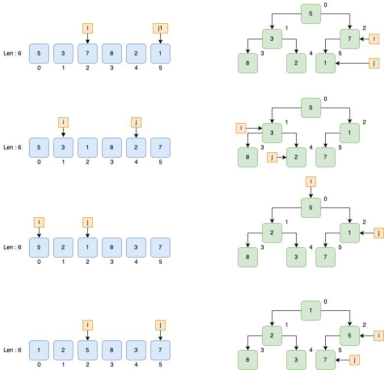
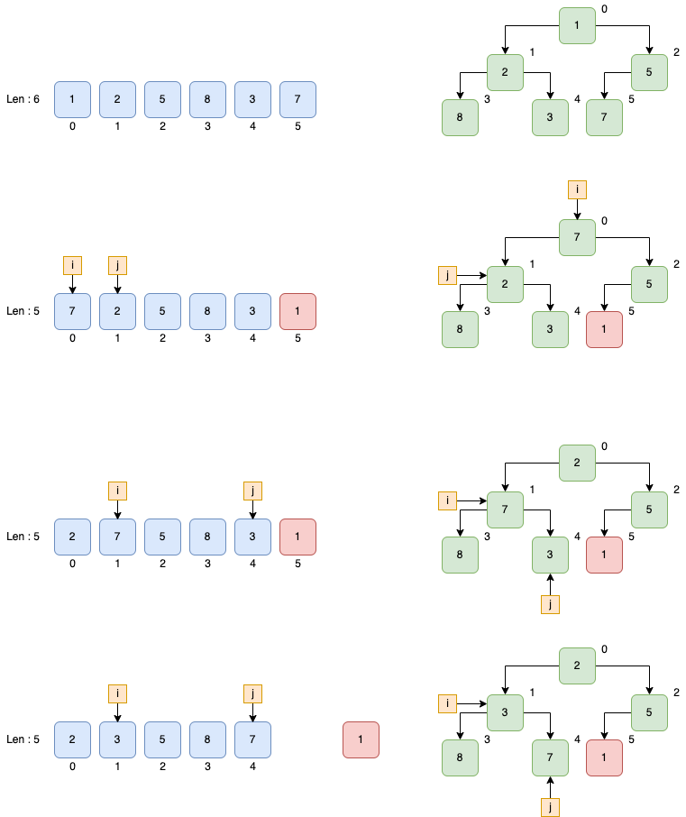
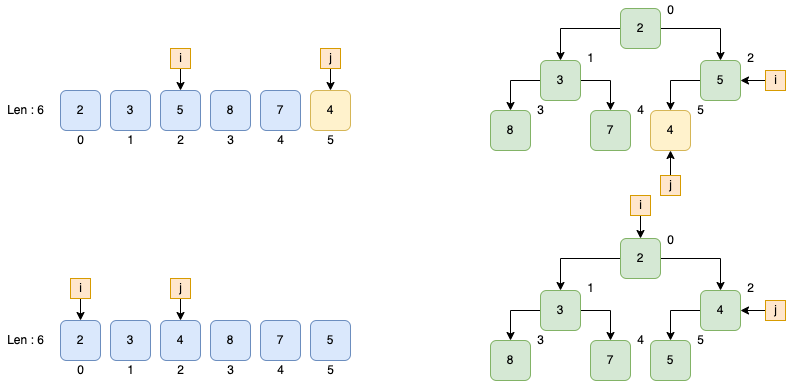
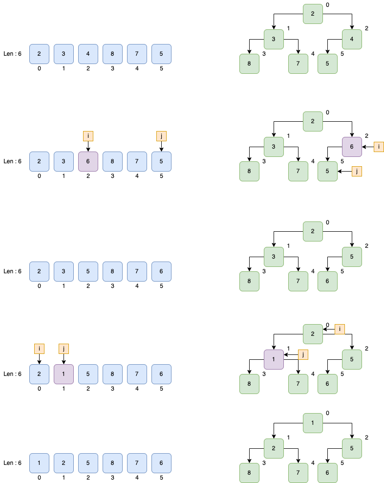
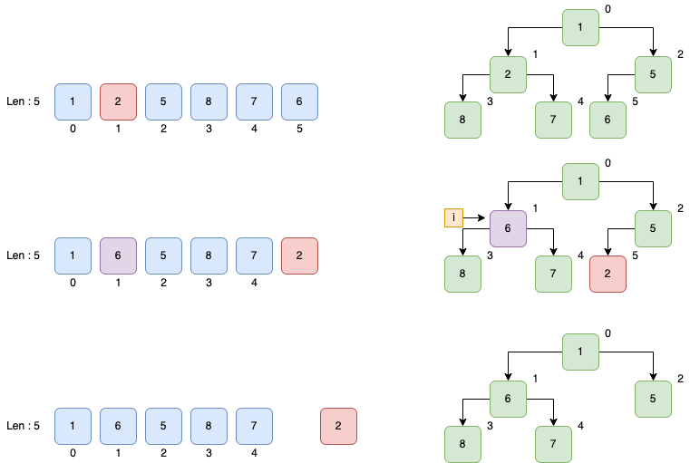

In this post, I will go throught all the interfaces and functions of golang’s container/heap package and explain how it works. Also, I will use several simple examples to show how we can use it to create and use the heap structure that we want.
Interfaces
Package heap defines Interface which contains Interface of package sort, and two methods: Push and Pop.
// go1.18.1/src/container/heap/heap.go
package heap
import "sort"
type Interface interface {
sort.Interface
Push(x any) // add x as element Len()
Pop() any // remove and return element Len() - 1.
}Interface of package sort has 3 methods: Len, Less and Swap :
package sort
// An implementation of Interface can be sorted by the routines in this package.
// The methods refer to elements of the underlying collection by integer index.
type Interface interface {
// Len is the number of elements in the collection.
Len() int
// Less reports whether the element with index i
// must sort before the element with index j.
Less(i, j int) bool
// Swap swaps the elements with indexes i and j.
Swap(i, j int)
}It mains that in order to implement Interface of package heap, our structure should have 5 methods: Len, Less, Swap, Push and Pop.
For example:
type MinHeap []int
func (m MinHeap) Less(i, j int) bool {
return m[i] <= m[j]
}
func (m MinHeap) Len() int {
return len(m)
}
func (m MinHeap) Swap(i, j int) {
m[i], m[j] = m[j], m[i]
}
func (m *MinHeap) Push(x any) {
*m = append(*m, x.(int))
}
func (m *MinHeap) Pop() any {
size := len(*m)
last := (*m)[size-1]
*m = (*m)[:size-1]
return last
}Above is a new structure named MinHeap which implements all the methods of Interface in package heap.
Now that we’ve already defined a structure which has all these 5 methods, how do we use this package and how does this package work?
Functions
There are 5 public functions in this package:
Init
Init function will build a heap with given Interface who contains all the data.
According to the code from this package, Init will perform bottom-up construction in order to build the heap from array with O(n) time complexity.
- It will start from the last non-leaf node and swap it with its smallest child if this subtree does not meet the requirement of
Minheap(In this example, we defined a minHeap, whose requirement is the parent node must smaller than all its childs). Here it will call theLessandSwapfunction which we defined for theMinHeappreviously in order to compare and swap two nodes. - Then it will move to the next non-leaf node and keep swapping until the whole tree become a
MinHeap
func Init(h Interface) {
// heapify
n := h.Len()
for i := n/2 - 1; i >= 0; i-- {
down(h, i, n)
}
}
func down(h Interface, i0, n int) bool {
i := i0
for {
j1 := 2*i + 1
if j1 >= n || j1 < 0 { // j1 < 0 after int overflow
break
}
j := j1 // left child
if j2 := j1 + 1; j2 < n && h.Less(j2, j1) {
j = j2 // = 2*i + 2 // right child
}
if !h.Less(j, i) {
break
}
h.Swap(i, j)
i = j
}
return i > i0
}With the MinHeap struct which we’ve just define before:
func main() {
fmt.Println("[Heap] Start heap tast, creating original array ...")
mh := &MinHeap{5, 3, 7, 8, 2, 1}
fmt.Printf("[Heap] Original array :%v\n", *mh)
fmt.Println("[Heap] Start to build minHeap...")
heap.Init(mh)
fmt.Printf("[Heap] MinHeap:%v\n", *mh)
...
}The Init function will build the heap like this:

The output of previous code will be:
$ go run main.go
[Heap] Start heap tast, creating original array ...
[Heap] Original array :[5 3 7 8 2 1]
[Heap] Start to build minHeap...
[Heap] MinHeap:[1 2 5 8 3 7]
...Pop
Pop function will swap the root with the last node of the array and shorten the length of current array in order to exclude this minimum data in the upcoming action.
Then it will move the current root down in order to build a new MinHeap.
After that, this function will call the Pop function we defined for the MinHeap struct before to return the last node which is the minimum data in the structure:
// Pop removes and returns the minimum element (according to Less) from the heap.
// The complexity is O(log n) where n = h.Len().
// Pop is equivalent to Remove(h, 0).
func Pop(h Interface) any {
n := h.Len() - 1
h.Swap(0, n)
down(h, 0, n)
return h.Pop()
}Still, with the same MinHeap struct:
func main() {
...
fmt.Printf("[Heap] MinHeap:%v\n", *mh)
first := heap.Pop(mh)
fmt.Printf("[Heap] Pop:%d MinHeap:%v\n", first, *mh)
...
}The Pop function will process the Minheap as:

The output of previous code will be:
...
[Heap] MinHeap:[1 2 5 8 3 7]
[Heap] Pop:1 MinHeap:[2 3 5 8 7]
...Push
Push function will first call the Push method of the given interface(MinHeap) in order to put the new node to the end of the array.
Then it will keep moving this new node up using MinHeap‘s Less and Swap methods to make sure that the new array still meets the requirement of MinHeap.
// Push pushes the element x onto the heap.
// The complexity is O(log n) where n = h.Len().
func Push(h Interface, x any) {
h.Push(x)
up(h, h.Len()-1)
}
func up(h Interface, j int) {
for {
i := (j - 1) / 2 // parent
if i == j || !h.Less(j, i) {
break
}
h.Swap(i, j)
j = i
}
}With the same MinHeap struct:
func main() {
...
fmt.Printf("[Heap] MinHeap:%v\n", *mh)
first := heap.Pop(mh)
fmt.Printf("[Heap] Pop:%d MinHeap:%v\n", first, *mh)
heap.Push(mh, 4)
fmt.Printf("[Heap] Push:%d MinHeap:%v\n", 4, *mh)
...
}The Push function will process like this:

And the output of previous code will be:
...
[Heap] MinHeap:[1 2 5 8 3 7]
[Heap] Pop:1 MinHeap:[2 3 5 8 7]
[Heap] Push:4 MinHeap:[2 3 4 8 7 5]
...Fix
Fix function of package heap can be used when one of the node’s value is changed. In this situation, we don’t need to use Init to rebuild the whole tree, we only need to move this node down/up in order to make the array to meet the requirement again:
// Fix re-establishes the heap ordering after the element at index i has changed its value.
// Changing the value of the element at index i and then calling Fix is equivalent to,
// but less expensive than, calling Remove(h, i) followed by a Push of the new value.
// The complexity is O(log n) where n = h.Len().
func Fix(h Interface, i int) {
if !down(h, i, h.Len()) {
up(h, i)
}
}down function will return a boolean value to indicate whether the position of target node has been changed in previous process. If not, it means that it might need to move up.
For example:
func main() {
...
fmt.Printf("[Heap] Changing one node of minHeap %v..\n", *mh)
(*mh)[2] = 6
fmt.Printf("[Heap] MinHeap will be fixed:%v\n", *mh)
heap.Fix(mh, 2)
fmt.Printf("[Heap] MinHeap after fix:%v\n", *mh)
fmt.Printf("[Heap] Changing one node of minHeap %v..\n", *mh)
(*mh)[1] = 1
heap.Fix(mh, 1)
fmt.Printf("[Heap] MinHeap after fix:%v\n", *mh)
...
}The Fix function will process like this:

And the output of previous code will be:
[Heap] Changing one node of minHeap [2 3 4 8 7 5]..
[Heap] MinHeap will be fixed:[2 3 6 8 7 5]
[Heap] MinHeap after fix:[2 3 5 8 7 6]
[Heap] Changing one node of minHeap [2 3 5 8 7 6]..
[Heap] MinHeap after fix:[1 2 5 8 7 6]Remove
Remove function is a bit like the combination of Pop and Fix.
- It will shorten the length of the array in order to exclude the last node in the tree (which will be change to the target node in next step)
- Then it will swap the target node with the last node.
- Coz the value the previous position of target node holds has been changed, this function will act like
Fixfunction to make the array to meet the requirement again. - Finally it will pop out the current last node which is the target node as well.
// Remove removes and returns the element at index i from the heap.
// The complexity is O(log n) where n = h.Len().
func Remove(h Interface, i int) any {
n := h.Len() - 1
if n != i {
h.Swap(i, n)
if !down(h, i, n) {
up(h, i)
}
}
return h.Pop()
}For example:
func main(){
...
//Remove
fmt.Printf("[Heap] Removing one node from minHeap %v..\n", *mh)
elem := heap.Remove(mh, 1)
fmt.Printf("[Heap] MinHeap after removing element %d :%v\n", elem, *mh)
...
}The Remove function will process like this:

And the output of previous code will be:
[Heap] Removing one node from minHeap [1 2 5 8 7 6]..
[Heap] MinHeap after removing element 2 :[1 6 5 8 7]Here is mainly all the thing that I want to talk about package Heap. The complete example code can be found in my repo: lz-nsz/go-example/heap